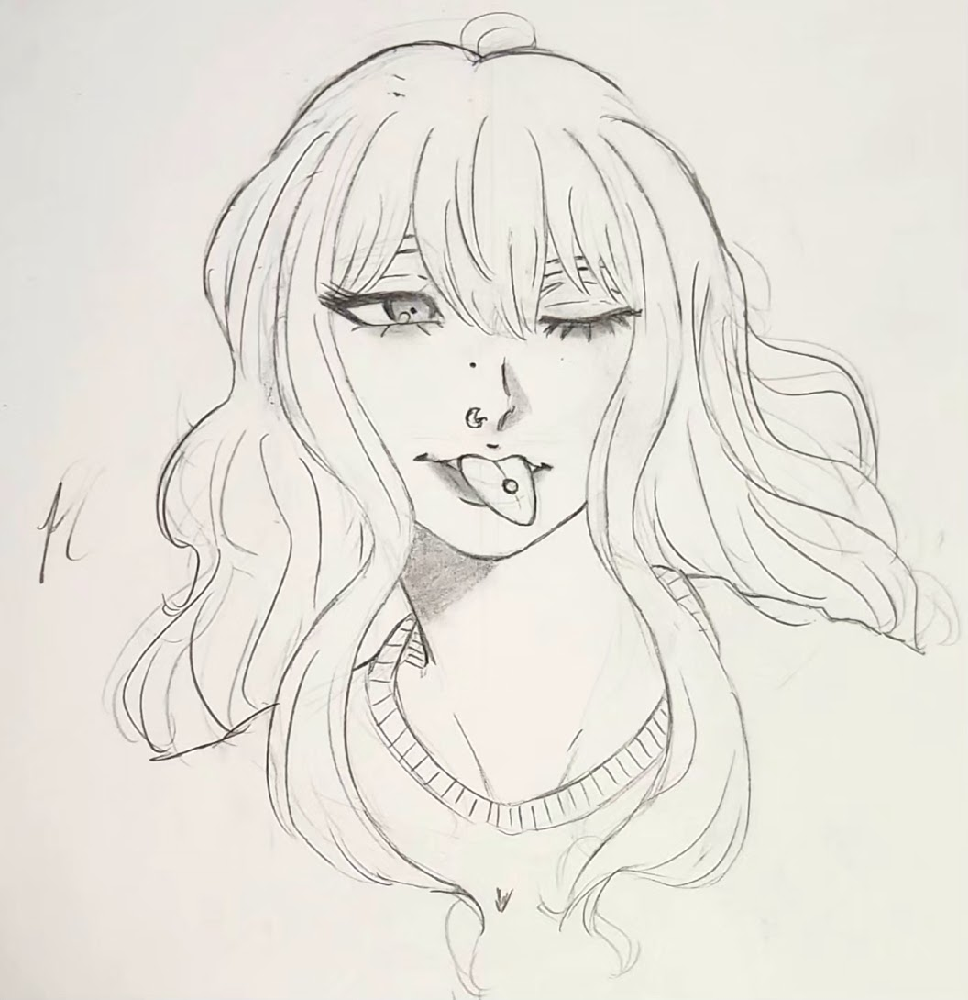

Minerva Laurent
How it came to life
Before I made Mila, I noticed I had four male characters and two females. To make it more fair, I decided to create more female characters.
When I was a kid, I used to have a huge crush on ginger characters in movies and cartoons, so I made Minerva with this old memory pairing my head. Surprisingly, she is the hardest character to draw in my opinion because of her features (hair, eyes, etc.)
Mila's personality is close to Zeke's, in a sense that she is always joking around with the girls and is fierce and lively. Although she is explicitly soft and emotional, in counterpart to him.
Since she is one of my most recent characters, I do not have that many drawings of her.
Her favorite color is magenta.
Inspirations
I credit myself a lot when it comes to Minerva's design because I didn't use references. I came up with her entire design, without basing her in anything. I just knew I wanted a character that looks more 'mature', and that's why I sometimes draw her with makeup and piercings.
Previous Designs
2022/23